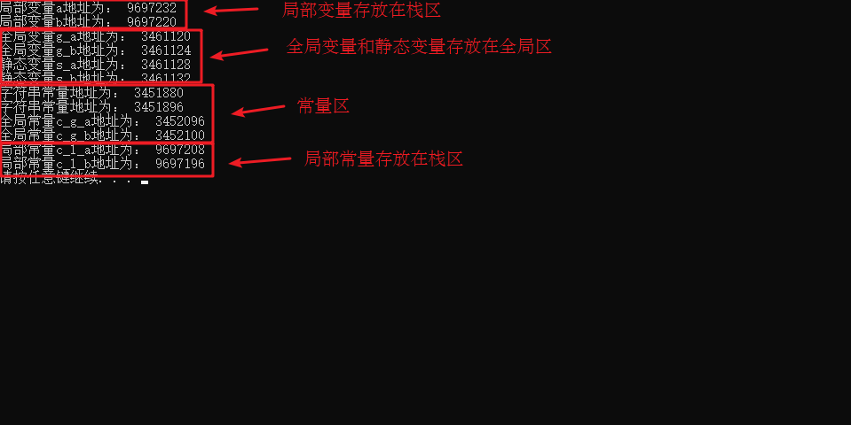
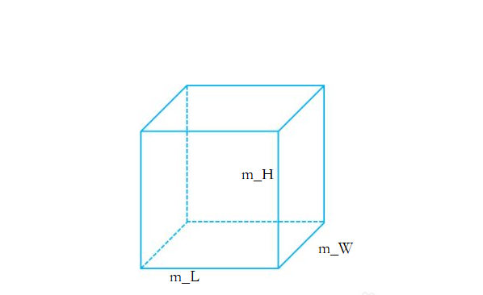
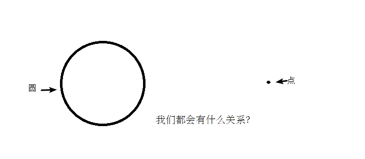
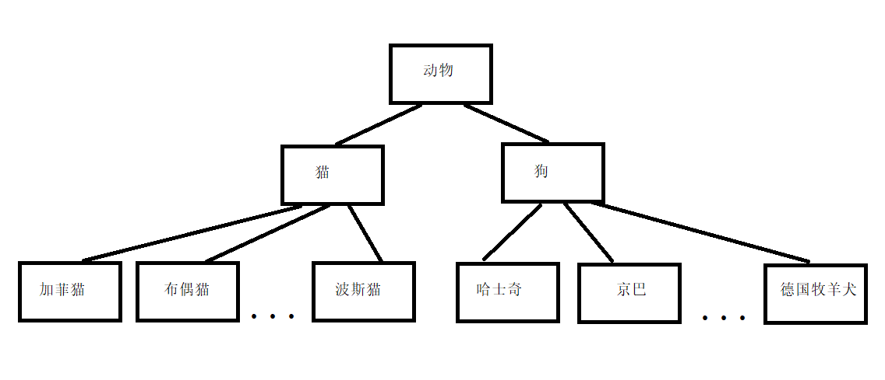
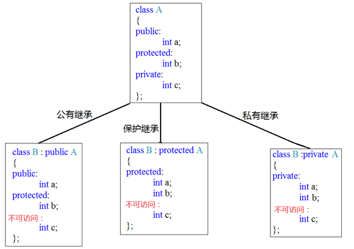
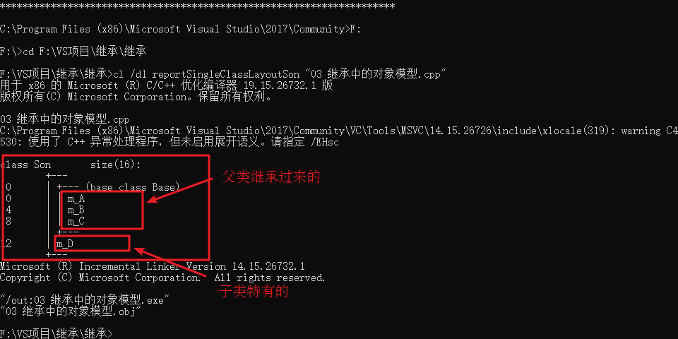
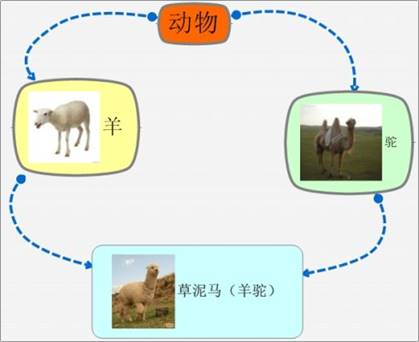

C++核心编程
本阶段主要针对C++面向对象编程技术做详细讲解，探讨C++中的核心和精髓。
1 内存分区模型
C++程序在执行时，将内存大方向划分为4个区域
代码区：存放函数体的二进制代码，由操作系统进行管理的
全局区：存放全局变量和静态变量以及常量
栈区：由编译器自动分配释放, 存放函数的参数值,局部变量等
堆区：由程序员分配和释放,若程序员不释放,程序结束时由操作系统回收
内存四区意义：
不同区域存放的数据，赋予不同的生命周期, 给我们更大的灵活编程
1.1 程序运行前
在程序编译后，生成了exe可执行程序，未执行该程序前分为两个区域
代码区：
存放 CPU 执行的机器指令
代码区是共享的，共享的目的是对于频繁被执行的程序，只需要在内存中有一份代码即可
代码区是只读的，使其只读的原因是防止程序意外地修改了它的指令
全局区：
全局变量和静态变量存放在此.
全局区还包含了常量区, 字符串常量和其他常量也存放在此.
该区域的数据在程序结束后由操作系统释放.
示例：
//全局变量 int g_a = 10; int g_b = 10; //全局常量 const int c_g_a = 10; const int c_g_b = 10; int main() { //局部变量 int a = 10; int b = 10; //打印地址 cout << "局部变量a地址为： " << (int)&a << endl; cout << "局部变量b地址为： " << (int)&b << endl; cout << "全局变量g_a地址为： " << (int)&g_a << endl; cout << "全局变量g_b地址为： " << (int)&g_b << endl; //静态变量 static int s_a = 10; static int s_b = 10; cout << "静态变量s_a地址为： " << (int)&s_a << endl; cout << "静态变量s_b地址为： " << (int)&s_b << endl; cout << "字符串常量地址为： " << (int)&"hello world" << endl; cout << "字符串常量地址为： " << (int)&"hello world1" << endl; cout << "全局常量c_g_a地址为： " << (int)&c_g_a << endl; cout << "全局常量c_g_b地址为： " << (int)&c_g_b << endl; const int c_l_a = 10; const int c_l_b = 10; cout << "局部常量c_l_a地址为： " << (int)&c_l_a << endl; cout << "局部常量c_l_b地址为： " << (int)&c_l_b << endl; system("pause"); return 0; }
打印结果：

总结：
C++中在程序运行前分为全局区和代码区
代码区特点是共享和只读
全局区中存放全局变量、静态变量、常量
常量区中存放 const修饰的全局常量 和 字符串常量
1.2 程序运行后
栈区：
由编译器自动分配释放, 存放函数的参数值,局部变量等
注意事项：不要返回局部变量的地址，栈区开辟的数据由编译器自动释放
示例：
int * func() { int a = 10; return &a; } int main() { int *p = func(); cout << *p << endl; cout << *p << endl; system("pause"); return 0; }
堆区：
由程序员分配释放,若程序员不释放,程序结束时由操作系统回收
在C++中主要利用new在堆区开辟内存
示例：
int* func() { int* a = new int(10); return a; } int main() { int *p = func(); cout << *p << endl; cout << *p << endl; system("pause"); return 0; }
总结：
堆区数据由程序员管理开辟和释放
堆区数据利用new关键字进行开辟内存
1.3 new操作符
C++中利用new操作符在堆区开辟数据
堆区开辟的数据，由程序员手动开辟，手动释放，释放利用操作符 delete
语法：
new 数据类型利用new创建的数据，会返回该数据对应的类型的指针
示例1： 基本语法
int* func() { int* a = new int(10); return a; } int main() { int *p = func(); cout << *p << endl; cout << *p << endl; //利用delete释放堆区数据 delete p; //cout << *p << endl; //报错，释放的空间不可访问 system("pause"); return 0; }
示例2：开辟数组
//堆区开辟数组 int main() { int* arr = new int[10]; for (int i = 0; i < 10; i++) { arr[i] = i + 100; } for (int i = 0; i < 10; i++) { cout << arr[i] << endl; } //释放数组 delete 后加 [] delete[] arr; system("pause"); return 0; }
2 引用
2.1 引用的基本使用
作用： 给变量起别名
语法：
数据类型 &别名 = 原名示例：
int main() { int a = 10; int &b = a; cout << "a = " << a << endl; cout << "b = " << b << endl; b = 100; cout << "a = " << a << endl; cout << "b = " << b << endl; system("pause"); return 0; }
2.2 引用注意事项
引用必须初始化
引用在初始化后，不可以改变
示例：
int main() { int a = 10; int b = 20; //int &c; //错误，引用必须初始化 int &c = a; //一旦初始化后，就不可以更改 c = b; //这是赋值操作，不是更改引用 cout << "a = " << a << endl; cout << "b = " << b << endl; cout << "c = " << c << endl; system("pause"); return 0; }
2.3 引用做函数参数
作用：函数传参时，可以利用引用的技术让形参修饰实参
优点：可以简化指针修改实参
示例：
//1. 值传递 void mySwap01(int a, int b) { int temp = a; a = b; b = temp; } //2. 地址传递 void mySwap02(int* a, int* b) { int temp = *a; *a = *b; *b = temp; } //3. 引用传递 void mySwap03(int& a, int& b) { int temp = a; a = b; b = temp; } int main() { int a = 10; int b = 20; mySwap01(a, b); cout << "a:" << a << " b:" << b << endl; mySwap02(&a, &b); cout << "a:" << a << " b:" << b << endl; mySwap03(a, b); cout << "a:" << a << " b:" << b << endl; system("pause"); return 0; }
总结：通过引用参数产生的效果同按地址传递是一样的。引用的语法更清楚简单
2.4 引用做函数返回值
作用：引用是可以作为函数的返回值存在的
注意：不要返回局部变量引用
用法：函数调用作为左值
示例：
//返回局部变量引用 int& test01() { int a = 10; //局部变量 return a; } //返回静态变量引用 int& test02() { static int a = 20; return a; } int main() { //不能返回局部变量的引用 int& ref = test01(); cout << "ref = " << ref << endl; cout << "ref = " << ref << endl; //如果函数做左值，那么必须返回引用 int& ref2 = test02(); cout << "ref2 = " << ref2 << endl; cout << "ref2 = " << ref2 << endl; test02() = 1000; cout << "ref2 = " << ref2 << endl; cout << "ref2 = " << ref2 << endl; system("pause"); return 0; }
2.5 引用的本质
本质：引用的本质在c++内部实现是一个指针常量.
讲解示例：
//发现是引用，转换为 int* const ref = &a; void func(int& ref){ ref = 100; // ref是引用，转换为*ref = 100 } int main(){ int a = 10; //自动转换为 int* const ref = &a; 指针常量是指针指向不可改，也说明为什么引用不可更改 int& ref = a; ref = 20; //内部发现ref是引用，自动帮我们转换为: *ref = 20; cout << "a:" << a << endl; cout << "ref:" << ref << endl; func(a); return 0; }
结论：C++推荐用引用技术，因为语法方便，引用本质是指针常量，但是所有的指针操作编译器都帮我们做了
2.6 常量引用
作用：常量引用主要用来修饰形参，防止误操作
在函数形参列表中，可以加const修饰形参，防止形参改变实参
示例：
//引用使用的场景，通常用来修饰形参 void showValue(const int& v) { //v += 10; cout << v << endl; } int main() { //int& ref = 10; 引用本身需要一个合法的内存空间，因此这行错误 //加入const就可以了，编译器优化代码，int temp = 10; const int& ref = temp; const int& ref = 10; //ref = 100; //加入const后不可以修改变量 cout << ref << endl; //函数中利用常量引用防止误操作修改实参 int a = 10; showValue(a); system("pause"); return 0; }
3 函数提高
3.1 函数默认参数
在C++中，函数的形参列表中的形参是可以有默认值的。
语法：
返回值类型 函数名 （参数= 默认值）{}示例：
int func(int a, int b = 10, int c = 10) { return a + b + c; } //1. 如果某个位置参数有默认值，那么从这个位置往后，从左向右，必须都要有默认值 //2. 如果函数声明有默认值，函数实现的时候就不能有默认参数 int func2(int a = 10, int b = 10); int func2(int a, int b) { return a + b; } int main() { cout << "ret = " << func(20, 20) << endl; cout << "ret = " << func(100) << endl; system("pause"); return 0; }
3.2 函数占位参数
C++中函数的形参列表里可以有占位参数，用来做占位，调用函数时必须填补该位置
语法：
返回值类型 函数名 (数据类型){}在现阶段函数的占位参数存在意义不大，但是后面的课程中会用到该技术
示例：
//函数占位参数 ，占位参数也可以有默认参数 void func(int a, int) { cout << "this is func" << endl; } int main() { func(10,10); //占位参数必须填补 system("pause"); return 0; }
3.3 函数重载
3.3.1 函数重载概述
作用：函数名可以相同，提高复用性
函数重载满足条件：
同一个作用域下
函数名称相同
函数参数类型不同 或者 个数不同 或者 顺序不同
注意: 函数的返回值不可以作为函数重载的条件
示例：
//函数重载需要函数都在同一个作用域下 void func() { cout << "func 的调用！" << endl; } void func(int a) { cout << "func (int a) 的调用！" << endl; } void func(double a) { cout << "func (double a)的调用！" << endl; } void func(int a ,double b) { cout << "func (int a ,double b) 的调用！" << endl; } void func(double a ,int b) { cout << "func (double a ,int b)的调用！" << endl; } //函数返回值不可以作为函数重载条件 //int func(double a, int b) //{ // cout << "func (double a ,int b)的调用！" << endl; //} int main() { func(); func(10); func(3.14); func(10,3.14); func(3.14 , 10); system("pause"); return 0; }
3.3.2 函数重载注意事项
引用作为重载条件
函数重载碰到函数默认参数
示例：
//函数重载注意事项 //1、引用作为重载条件 void func(int &a) { cout << "func (int &a) 调用 " << endl; } void func(const int &a) { cout << "func (const int &a) 调用 " << endl; } //2、函数重载碰到函数默认参数 void func2(int a, int b = 10) { cout << "func2(int a, int b = 10) 调用" << endl; } void func2(int a) { cout << "func2(int a) 调用" << endl; } int main() { int a = 10; func(a); //调用无const func(10);//调用有const //func2(10); //碰到默认参数产生歧义，需要避免 system("pause"); return 0; }
4 类和对象
C++面向对象的三大特性为：封装、继承、多态
C++认为万事万物都皆为对象，对象上有其属性和行为
例如：
人可以作为对象，属性有姓名、年龄、身高、体重...，行为有走、跑、跳、吃饭、唱歌...
车也可以作为对象，属性有轮胎、方向盘、车灯...,行为有载人、放音乐、放空调...
具有相同性质的对象，我们可以抽象称为类，人属于人类，车属于车类
4.1 封装
4.1.1 封装的意义
封装是C++面向对象三大特性之一
封装的意义：
将属性和行为作为一个整体，表现生活中的事物
将属性和行为加以权限控制
封装意义一：
在设计类的时候，属性和行为写在一起，表现事物
语法：
class 类名{ 访问权限： 属性 / 行为 };示例1：设计一个圆类，求圆的周长
示例代码：
//圆周率 const double PI = 3.14; //1、封装的意义 //将属性和行为作为一个整体，用来表现生活中的事物 //封装一个圆类，求圆的周长 //class代表设计一个类，后面跟着的是类名 class Circle { public: //访问权限 公共的权限 //属性 int m_r;//半径 //行为 //获取到圆的周长 double calculateZC() { //2 * pi * r //获取圆的周长 return 2 * PI * m_r; } }; int main() { //通过圆类，创建圆的对象 // c1就是一个具体的圆 Circle c1; c1.m_r = 10; //给圆对象的半径 进行赋值操作 //2 * pi * 10 = = 62.8 cout << "圆的周长为： " << c1.calculateZC() << endl; system("pause"); return 0; }
示例2：设计一个学生类，属性有姓名和学号，可以给姓名和学号赋值，可以显示学生的姓名和学号
示例2代码：
//学生类 class Student { public: void setName(string name) { m_name = name; } void setID(int id) { m_id = id; } void showStudent() { cout << "name:" << m_name << " ID:" << m_id << endl; } public: string m_name; int m_id; }; int main() { Student stu; stu.setName("德玛西亚"); stu.setID(250); stu.showStudent(); system("pause"); return 0; }
封装意义二：
类在设计时，可以把属性和行为放在不同的权限下，加以控制
访问权限有三种：
public 公共权限
protected 保护权限
private 私有权限
示例：
//三种权限 //公共权限 public 类内可以访问 类外可以访问 //保护权限 protected 类内可以访问 类外不可以访问 //私有权限 private 类内可以访问 类外不可以访问 class Person { //姓名 公共权限 public: string m_Name; //汽车 保护权限 protected: string m_Car; //银行卡密码 私有权限 private: int m_Password; public: void func() { m_Name = "张三"; m_Car = "拖拉机"; m_Password = 123456; } }; int main() { Person p; p.m_Name = "李四"; //p.m_Car = "奔驰"; //保护权限类外访问不到 //p.m_Password = 123; //私有权限类外访问不到 system("pause"); return 0; }
4.1.2 struct和class区别
在C++中 struct和class唯一的区别就在于 默认的访问权限不同
区别：
struct 默认权限为公共
class 默认权限为私有
class C1 { int m_A; //默认是私有权限 }; struct C2 { int m_A; //默认是公共权限 }; int main() { C1 c1; c1.m_A = 10; //错误，访问权限是私有 C2 c2; c2.m_A = 10; //正确，访问权限是公共 system("pause"); return 0; }
4.1.3 成员属性设置为私有
优点1：将所有成员属性设置为私有，可以自己控制读写权限
优点2：对于写权限，我们可以检测数据的有效性
示例：
class Person { public: //姓名设置可读可写 void setName(string name) { m_Name = name; } string getName() { return m_Name; } //获取年龄 int getAge() { return m_Age; } //设置年龄 void setAge(int age) { if (age < 0 || age > 150) { cout << "你个老妖精!" << endl; return; } m_Age = age; } //情人设置为只写 void setLover(string lover) { m_Lover = lover; } private: string m_Name; //可读可写 姓名 int m_Age; //只读 年龄 string m_Lover; //只写 情人 }; int main() { Person p; //姓名设置 p.setName("张三"); cout << "姓名： " << p.getName() << endl; //年龄设置 p.setAge(50); cout << "年龄： " << p.getAge() << endl; //情人设置 p.setLover("苍井"); //cout << "情人： " << p.m_Lover << endl; //只写属性，不可以读取 system("pause"); return 0; }
练习案例1：设计立方体类
设计立方体类(Cube)
求出立方体的面积和体积
分别用全局函数和成员函数判断两个立方体是否相等。

练习案例2：点和圆的关系
设计一个圆形类（Circle），和一个点类（Point），计算点和圆的关系。

4.2 对象的初始化和清理
生活中我们买的电子产品都基本会有出厂设置，在某一天我们不用时候也会删除一些自己信息数据保证安全
C++中的面向对象来源于生活，每个对象也都会有初始设置以及 对象销毁前的清理数据的设置。
4.2.1 构造函数和析构函数
对象的初始化和清理也是两个非常重要的安全问题
一个对象或者变量没有初始状态，对其使用后果是未知
同样的使用完一个对象或变量，没有及时清理，也会造成一定的安全问题
c++利用了构造函数和析构函数解决上述问题，这两个函数将会被编译器自动调用，完成对象初始化和清理工作。
对象的初始化和清理工作是编译器强制要我们做的事情，因此如果我们不提供构造和析构，编译器会提供
编译器提供的构造函数和析构函数是空实现。
构造函数：主要作用在于创建对象时为对象的成员属性赋值，构造函数由编译器自动调用，无须手动调用。
析构函数：主要作用在于对象销毁前系统自动调用，执行一些清理工作。
构造函数语法：
类名(){}
构造函数，没有返回值也不写void
函数名称与类名相同
构造函数可以有参数，因此可以发生重载
程序在调用对象时候会自动调用构造，无须手动调用,而且只会调用一次
析构函数语法：
~类名(){}析构函数，没有返回值也不写void
函数名称与类名相同,在名称前加上符号 ~
析构函数不可以有参数，因此不可以发生重载
程序在对象销毁前会自动调用析构，无须手动调用,而且只会调用一次
class Person { public: //构造函数 Person() { cout << "Person的构造函数调用" << endl; } //析构函数 ~Person() { cout << "Person的析构函数调用" << endl; } }; void test01() { Person p; } int main() { test01(); system("pause"); return 0; }
4.2.2 构造函数的分类及调用
两种分类方式：
按参数分为： 有参构造和无参构造
按类型分为： 普通构造和拷贝构造
三种调用方式：
括号法
显示法
隐式转换法
示例：
//1、构造函数分类 // 按照参数分类分为 有参和无参构造 无参又称为默认构造函数 // 按照类型分类分为 普通构造和拷贝构造 class Person { public: //无参（默认）构造函数 Person() { cout << "无参构造函数!" << endl; } //有参构造函数 Person(int a) { age = a; cout << "有参构造函数!" << endl; } //拷贝构造函数 Person(const Person& p) { age = p.age; cout << "拷贝构造函数!" << endl; } //析构函数 ~Person() { cout << "析构函数!" << endl; } public: int age; }; //2、构造函数的调用 //调用无参构造函数 void test01() { Person p; //调用无参构造函数 } //调用有参的构造函数 void test02() { //2.1 括号法，常用 Person p1(10); //注意1：调用无参构造函数不能加括号，如果加了编译器认为这是一个函数声明 //Person p2(); //2.2 显式法 Person p2 = Person(10); Person p3 = Person(p2); //Person(10)单独写就是匿名对象 当前行结束之后，马上析构 //2.3 隐式转换法 Person p4 = 10; // Person p4 = Person(10); Person p5 = p4; // Person p5 = Person(p4); //注意2：不能利用 拷贝构造函数 初始化匿名对象 编译器认为是对象声明 //Person p5(p4); } int main() { test01(); //test02(); system("pause"); return 0; }
4.2.3 拷贝构造函数调用时机
C++中拷贝构造函数调用时机通常有三种情况
使用一个已经创建完毕的对象来初始化一个新对象
值传递的方式给函数参数传值
以值方式返回局部对象
示例：
class Person { public: Person() { cout << "无参构造函数!" << endl; mAge = 0; } Person(int age) { cout << "有参构造函数!" << endl; mAge = age; } Person(const Person& p) { cout << "拷贝构造函数!" << endl; mAge = p.mAge; } //析构函数在释放内存之前调用 ~Person() { cout << "析构函数!" << endl; } public: int mAge; }; //1. 使用一个已经创建完毕的对象来初始化一个新对象 void test01() { Person man(100); //p对象已经创建完毕 Person newman(man); //调用拷贝构造函数 Person newman2 = man; //拷贝构造 //Person newman3; //newman3 = man; //不是调用拷贝构造函数，赋值操作 } //2. 值传递的方式给函数参数传值 //相当于Person p1 = p; void doWork(Person p1) {} void test02() { Person p; //无参构造函数 doWork(p); } //3. 以值方式返回局部对象 Person doWork2() { Person p1; cout << (int *)&p1 << endl; return p1; } void test03() { Person p = doWork2(); cout << (int *)&p << endl; } int main() { //test01(); //test02(); test03(); system("pause"); return 0; }
4.2.4 构造函数调用规则
默认情况下，c++编译器至少给一个类添加3个函数
1．默认构造函数(无参，函数体为空)
2．默认析构函数(无参，函数体为空)
3．默认拷贝构造函数，对属性进行值拷贝
构造函数调用规则如下：
如果用户定义有参构造函数，c++不在提供默认无参构造，但是会提供默认拷贝构造
如果用户定义拷贝构造函数，c++不会再提供其他构造函数
示例：
class Person { public: //无参（默认）构造函数 Person() { cout << "无参构造函数!" << endl; } //有参构造函数 Person(int a) { age = a; cout << "有参构造函数!" << endl; } //拷贝构造函数 Person(const Person& p) { age = p.age; cout << "拷贝构造函数!" << endl; } //析构函数 ~Person() { cout << "析构函数!" << endl; } public: int age; }; void test01() { Person p1(18); //如果不写拷贝构造，编译器会自动添加拷贝构造，并且做浅拷贝操作 Person p2(p1); cout << "p2的年龄为： " << p2.age << endl; } void test02() { //如果用户提供有参构造，编译器不会提供默认构造，会提供拷贝构造 Person p1; //此时如果用户自己没有提供默认构造，会出错 Person p2(10); //用户提供的有参 Person p3(p2); //此时如果用户没有提供拷贝构造，编译器会提供 //如果用户提供拷贝构造，编译器不会提供其他构造函数 Person p4; //此时如果用户自己没有提供默认构造，会出错 Person p5(10); //此时如果用户自己没有提供有参，会出错 Person p6(p5); //用户自己提供拷贝构造 } int main() { test01(); system("pause"); return 0; }
4.2.5 深拷贝与浅拷贝
深浅拷贝是面试经典问题，也是常见的一个坑
浅拷贝：简单的赋值拷贝操作
深拷贝：在堆区重新申请空间，进行拷贝操作
示例：
class Person { public: //无参（默认）构造函数 Person() { cout << "无参构造函数!" << endl; } //有参构造函数 Person(int age ,int height) { cout << "有参构造函数!" << endl; m_age = age; m_height = new int(height); } //拷贝构造函数 Person(const Person& p) { cout << "拷贝构造函数!" << endl; //如果不利用深拷贝在堆区创建新内存，会导致浅拷贝带来的重复释放堆区问题 m_age = p.m_age; m_height = new int(*p.m_height); } //析构函数 ~Person() { cout << "析构函数!" << endl; if (m_height != NULL) { delete m_height; } } public: int m_age; int* m_height; }; void test01() { Person p1(18, 180); Person p2(p1); cout << "p1的年龄： " << p1.m_age << " 身高： " << *p1.m_height << endl; cout << "p2的年龄： " << p2.m_age << " 身高： " << *p2.m_height << endl; } int main() { test01(); system("pause"); return 0; }
总结：如果属性有在堆区开辟的，一定要自己提供拷贝构造函数，防止浅拷贝带来的问题
4.2.6 初始化列表
作用：
C++提供了初始化列表语法，用来初始化属性
语法：
构造函数()：属性1(值1),属性2（值2）... {}示例：
class Person { public: ////传统方式初始化 //Person(int a, int b, int c) { // m_A = a; // m_B = b; // m_C = c; //} //初始化列表方式初始化 Person(int a, int b, int c) :m_A(a), m_B(b), m_C(c) {} void PrintPerson() { cout << "mA:" << m_A << endl; cout << "mB:" << m_B << endl; cout << "mC:" << m_C << endl; } private: int m_A; int m_B; int m_C; }; int main() { Person p(1, 2, 3); p.PrintPerson(); system("pause"); return 0; }
4.2.7 类对象作为类成员
C++类中的成员可以是另一个类的对象，我们称该成员为 对象成员
例如：
class A {} class B { A a； }
B类中有对象A作为成员，A为对象成员
那么当创建B对象时，A与B的构造和析构的顺序是谁先谁后？
示例：
class Phone { public: Phone(string name) { m_PhoneName = name; cout << "Phone构造" << endl; } ~Phone() { cout << "Phone析构" << endl; } string m_PhoneName; }; class Person { public: //初始化列表可以告诉编译器调用哪一个构造函数 Person(string name, string pName) :m_Name(name), m_Phone(pName) { cout << "Person构造" << endl; } ~Person() { cout << "Person析构" << endl; } void playGame() { cout << m_Name << " 使用" << m_Phone.m_PhoneName << " 牌手机! " << endl; } string m_Name; Phone m_Phone; }; void test01() { //当类中成员是其他类对象时，我们称该成员为 对象成员 //构造的顺序是 ：先调用对象成员的构造，再调用本类构造 //析构顺序与构造相反 Person p("张三" , "苹果X"); p.playGame(); } int main() { test01(); system("pause"); return 0; }
4.2.8 静态成员
静态成员就是在成员变量和成员函数前加上关键字static，称为静态成员
静态成员分为：
静态成员变量
所有对象共享同一份数据
在编译阶段分配内存
类内声明，类外初始化
静态成员函数
所有对象共享同一个函数
静态成员函数只能访问静态成员变量
示例1 ：静态成员变量
class Person { public: static int m_A; //静态成员变量 //静态成员变量特点： //1 在编译阶段分配内存 //2 类内声明，类外初始化 //3 所有对象共享同一份数据 private: static int m_B; //静态成员变量也是有访问权限的 }; int Person::m_A = 10; int Person::m_B = 10; void test01() { //静态成员变量两种访问方式 //1、通过对象 Person p1; p1.m_A = 100; cout << "p1.m_A = " << p1.m_A << endl; Person p2; p2.m_A = 200; cout << "p1.m_A = " << p1.m_A << endl; //共享同一份数据 cout << "p2.m_A = " << p2.m_A << endl; //2、通过类名 cout << "m_A = " << Person::m_A << endl; //cout << "m_B = " << Person::m_B << endl; //私有权限访问不到 } int main() { test01(); system("pause"); return 0; }
示例2：静态成员函数
class Person { public: //静态成员函数特点： //1 程序共享一个函数 //2 静态成员函数只能访问静态成员变量 static void func() { cout << "func调用" << endl; m_A = 100; //m_B = 100; //错误，不可以访问非静态成员变量 } static int m_A; //静态成员变量 int m_B; // private: //静态成员函数也是有访问权限的 static void func2() { cout << "func2调用" << endl; } }; int Person::m_A = 10; void test01() { //静态成员变量两种访问方式 //1、通过对象 Person p1; p1.func(); //2、通过类名 Person::func(); //Person::func2(); //私有权限访问不到 } int main() { test01(); system("pause"); return 0; }
4.3 C++对象模型和this指针
4.3.1 成员变量和成员函数分开存储
在C++中，类内的成员变量和成员函数分开存储
只有非静态成员变量才属于类的对象上
class Person { public: Person() { mA = 0; } //非静态成员变量占对象空间 int mA; //静态成员变量不占对象空间 static int mB; //函数也不占对象空间，所有函数共享一个函数实例 void func() { cout << "mA:" << this->mA << endl; } //静态成员函数也不占对象空间 static void sfunc() { } }; int main() { cout << sizeof(Person) << endl; system("pause"); return 0; }
4.3.2 this指针概念
通过4.3.1我们知道在C++中成员变量和成员函数是分开存储的
每一个非静态成员函数只会诞生一份函数实例，也就是说多个同类型的对象会共用一块代码
那么问题是：这一块代码是如何区分那个对象调用自己的呢？
c++通过提供特殊的对象指针，this指针，解决上述问题。this指针指向被调用的成员函数所属的对象
this指针是隐含每一个非静态成员函数内的一种指针
this指针不需要定义，直接使用即可
this指针的用途：
当形参和成员变量同名时，可用this指针来区分
在类的非静态成员函数中返回对象本身，可使用return *this
class Person { public: Person(int age) { //1、当形参和成员变量同名时，可用this指针来区分 this->age = age; } Person& PersonAddPerson(Person p) { this->age += p.age; //返回对象本身 return *this; } int age; }; void test01() { Person p1(10); cout << "p1.age = " << p1.age << endl; Person p2(10); p2.PersonAddPerson(p1).PersonAddPerson(p1).PersonAddPerson(p1); cout << "p2.age = " << p2.age << endl; } int main() { test01(); system("pause"); return 0; }
4.3.3 空指针访问成员函数
C++中空指针也是可以调用成员函数的，但是也要注意有没有用到this指针
如果用到this指针，需要加以判断保证代码的健壮性
示例：
//空指针访问成员函数 class Person { public: void ShowClassName() { cout << "我是Person类!" << endl; } void ShowPerson() { if (this == NULL) { return; } cout << mAge << endl; } public: int mAge; }; void test01() { Person * p = NULL; p->ShowClassName(); //空指针，可以调用成员函数 p->ShowPerson(); //但是如果成员函数中用到了this指针，就不可以了 } int main() { test01(); system("pause"); return 0; }
4.3.4 const修饰成员函数
常函数：
成员函数后加const后我们称为这个函数为常函数
常函数内不可以修改成员属性
成员属性声明时加关键字mutable后，在常函数中依然可以修改
常对象：
声明对象前加const称该对象为常对象
常对象只能调用常函数
示例：
class Person { public: Person() { m_A = 0; m_B = 0; } //this指针的本质是一个指针常量，指针的指向不可修改 //如果想让指针指向的值也不可以修改，需要声明常函数 void ShowPerson() const { //const Type* const pointer; //this = NULL; //不能修改指针的指向 Person* const this; //this->mA = 100; //但是this指针指向的对象的数据是可以修改的 //const修饰成员函数，表示指针指向的内存空间的数据不能修改，除了mutable修饰的变量 this->m_B = 100; } void MyFunc() const { //mA = 10000; } public: int m_A; mutable int m_B; //可修改 可变的 }; //const修饰对象 常对象 void test01() { const Person person; //常量对象 cout << person.m_A << endl; //person.mA = 100; //常对象不能修改成员变量的值,但是可以访问 person.m_B = 100; //但是常对象可以修改mutable修饰成员变量 //常对象访问成员函数 person.MyFunc(); //常对象不能调用const的函数 } int main() { test01(); system("pause"); return 0; }
4.4 友元
生活中你的家有客厅(Public)，有你的卧室(Private)
客厅所有来的客人都可以进去，但是你的卧室是私有的，也就是说只有你能进去
但是呢，你也可以允许你的好闺蜜好基友进去。
在程序里，有些私有属性 也想让类外特殊的一些函数或者类进行访问，就需要用到友元的技术
友元的目的就是让一个函数或者类 访问另一个类中私有成员
友元的关键字为 friend
友元的三种实现
全局函数做友元
类做友元
成员函数做友元
4.4.1 全局函数做友元
class Building { //告诉编译器 goodGay全局函数 是 Building类的好朋友，可以访问类中的私有内容 friend void goodGay(Building * building); public: Building() { this->m_SittingRoom = "客厅"; this->m_BedRoom = "卧室"; } public: string m_SittingRoom; //客厅 private: string m_BedRoom; //卧室 }; void goodGay(Building * building) { cout << "好基友正在访问： " << building->m_SittingRoom << endl; cout << "好基友正在访问： " << building->m_BedRoom << endl; } void test01() { Building b; goodGay(&b); } int main(){ test01(); system("pause"); return 0; }
4.4.2 类做友元
class Building; class goodGay { public: goodGay(); void visit(); private: Building *building; }; class Building { //告诉编译器 goodGay类是Building类的好朋友，可以访问到Building类中私有内容 friend class goodGay; public: Building(); public: string m_SittingRoom; //客厅 private: string m_BedRoom;//卧室 }; Building::Building() { this->m_SittingRoom = "客厅"; this->m_BedRoom = "卧室"; } goodGay::goodGay() { building = new Building; } void goodGay::visit() { cout << "好基友正在访问" << building->m_SittingRoom << endl; cout << "好基友正在访问" << building->m_BedRoom << endl; } void test01() { goodGay gg; gg.visit(); } int main(){ test01(); system("pause"); return 0; }
4.4.3 成员函数做友元
class Building; class goodGay { public: goodGay(); void visit(); //只让visit函数作为Building的好朋友，可以发访问Building中私有内容 void visit2(); private: Building *building; }; class Building { //告诉编译器 goodGay类中的visit成员函数 是Building好朋友，可以访问私有内容 friend void goodGay::visit(); public: Building(); public: string m_SittingRoom; //客厅 private: string m_BedRoom;//卧室 }; Building::Building() { this->m_SittingRoom = "客厅"; this->m_BedRoom = "卧室"; } goodGay::goodGay() { building = new Building; } void goodGay::visit() { cout << "好基友正在访问" << building->m_SittingRoom << endl; cout << "好基友正在访问" << building->m_BedRoom << endl; } void goodGay::visit2() { cout << "好基友正在访问" << building->m_SittingRoom << endl; //cout << "好基友正在访问" << building->m_BedRoom << endl; } void test01() { goodGay gg; gg.visit(); } int main(){ test01(); system("pause"); return 0; }
4.5 运算符重载
运算符重载概念：对已有的运算符重新进行定义，赋予其另一种功能，以适应不同的数据类型
4.5.1 加号运算符重载
作用：实现两个自定义数据类型相加的运算
class Person { public: Person() {}; Person(int a, int b) { this->m_A = a; this->m_B = b; } //成员函数实现 + 号运算符重载 Person operator+(const Person& p) { Person temp; temp.m_A = this->m_A + p.m_A; temp.m_B = this->m_B + p.m_B; return temp; } public: int m_A; int m_B; }; //全局函数实现 + 号运算符重载 //Person operator+(const Person& p1, const Person& p2) { // Person temp(0, 0); // temp.m_A = p1.m_A + p2.m_A; // temp.m_B = p1.m_B + p2.m_B; // return temp; //} //运算符重载 可以发生函数重载 Person operator+(const Person& p2, int val) { Person temp; temp.m_A = p2.m_A + val; temp.m_B = p2.m_B + val; return temp; } void test() { Person p1(10, 10); Person p2(20, 20); //成员函数方式 Person p3 = p2 + p1; //相当于 p2.operaor+(p1) cout << "mA:" << p3.m_A << " mB:" << p3.m_B << endl; Person p4 = p3 + 10; //相当于 operator+(p3,10) cout << "mA:" << p4.m_A << " mB:" << p4.m_B << endl; } int main() { test(); system("pause"); return 0; }
总结1：对于内置的数据类型的表达式的的运算符是不可能改变的
总结2：不要滥用运算符重载
4.5.2 左移运算符重载
作用：可以输出自定义数据类型
class Person { friend ostream& operator<<(ostream& out, Person& p); public: Person(int a, int b) { this->m_A = a; this->m_B = b; } //成员函数 实现不了 p << cout 不是我们想要的效果 //void operator<<(Person& p){ //} private: int m_A; int m_B; }; //全局函数实现左移重载 //ostream对象只能有一个 ostream& operator<<(ostream& out, Person& p) { out << "a:" << p.m_A << " b:" << p.m_B; return out; } void test() { Person p1(10, 20); cout << p1 << "hello world" << endl; //链式编程 } int main() { test(); system("pause"); return 0; }
总结：重载左移运算符配合友元可以实现输出自定义数据类型
4.5.3 递增运算符重载
作用： 通过重载递增运算符，实现自己的整型数据
class MyInteger { friend ostream& operator<<(ostream& out, MyInteger myint); public: MyInteger() { m_Num = 0; } //前置++ MyInteger& operator++() { //先++ m_Num++; //再返回 return *this; } //后置++ MyInteger operator++(int) { //先返回 MyInteger temp = *this; //记录当前本身的值，然后让本身的值加1，但是返回的是以前的值，达到先返回后++； m_Num++; return temp; } private: int m_Num; }; ostream& operator<<(ostream& out, MyInteger myint) { out << myint.m_Num; return out; } //前置++ 先++ 再返回 void test01() { MyInteger myInt; cout << ++myInt << endl; cout << myInt << endl; } //后置++ 先返回 再++ void test02() { MyInteger myInt; cout << myInt++ << endl; cout << myInt << endl; } int main() { test01(); //test02(); system("pause"); return 0; }
总结： 前置递增返回引用，后置递增返回值
4.5.4 赋值运算符重载
c++编译器至少给一个类添加4个函数
默认构造函数(无参，函数体为空)
默认析构函数(无参，函数体为空)
默认拷贝构造函数，对属性进行值拷贝
赋值运算符 operator=, 对属性进行值拷贝
如果类中有属性指向堆区，做赋值操作时也会出现深浅拷贝问题
示例：
class Person { public: Person(int age) { //将年龄数据开辟到堆区 m_Age = new int(age); } //重载赋值运算符 Person& operator=(Person &p) { if (m_Age != NULL) { delete m_Age; m_Age = NULL; } //编译器提供的代码是浅拷贝 //m_Age = p.m_Age; //提供深拷贝 解决浅拷贝的问题 m_Age = new int(*p.m_Age); //返回自身 return *this; } ~Person() { if (m_Age != NULL) { delete m_Age; m_Age = NULL; } } //年龄的指针 int *m_Age; }; void test01() { Person p1(18); Person p2(20); Person p3(30); p3 = p2 = p1; //赋值操作 cout << "p1的年龄为：" << *p1.m_Age << endl; cout << "p2的年龄为：" << *p2.m_Age << endl; cout << "p3的年龄为：" << *p3.m_Age << endl; } int main() { test01(); //int a = 10; //int b = 20; //int c = 30; //c = b = a; //cout << "a = " << a << endl; //cout << "b = " << b << endl; //cout << "c = " << c << endl; system("pause"); return 0; }
4.5.5 关系运算符重载
作用：重载关系运算符，可以让两个自定义类型对象进行对比操作
示例：
class Person { public: Person(string name, int age) { this->m_Name = name; this->m_Age = age; }; bool operator==(Person & p) { if (this->m_Name == p.m_Name && this->m_Age == p.m_Age) { return true; } else { return false; } } bool operator!=(Person & p) { if (this->m_Name == p.m_Name && this->m_Age == p.m_Age) { return false; } else { return true; } } string m_Name; int m_Age; }; void test01() { //int a = 0; //int b = 0; Person a("孙悟空", 18); Person b("孙悟空", 18); if (a == b) { cout << "a和b相等" << endl; } else { cout << "a和b不相等" << endl; } if (a != b) { cout << "a和b不相等" << endl; } else { cout << "a和b相等" << endl; } } int main() { test01(); system("pause"); return 0; }
4.5.6 函数调用运算符重载
函数调用运算符 () 也可以重载
由于重载后使用的方式非常像函数的调用，因此称为仿函数
仿函数没有固定写法，非常灵活
示例：
class MyPrint { public: void operator()(string text) { cout << text << endl; } }; void test01() { //重载的（）操作符 也称为仿函数 MyPrint myFunc; myFunc("hello world"); } class MyAdd { public: int operator()(int v1, int v2) { return v1 + v2; } }; void test02() { MyAdd add; int ret = add(10, 10); cout << "ret = " << ret << endl; //匿名对象调用 cout << "MyAdd()(100,100) = " << MyAdd()(100, 100) << endl; } int main() { test01(); test02(); system("pause"); return 0; }
4.6 继承
继承是面向对象三大特性之一
有些类与类之间存在特殊的关系，例如下图中：

我们发现，定义这些类时，下级别的成员除了拥有上一级的共性，还有自己的特性。
这个时候我们就可以考虑利用继承的技术，减少重复代码
4.6.1 继承的基本语法
例如我们看到很多网站中，都有公共的头部，公共的底部，甚至公共的左侧列表，只有中心内容不同
接下来我们分别利用普通写法和继承的写法来实现网页中的内容，看一下继承存在的意义以及好处
普通实现：
//Java页面 class Java { public: void header() { cout << "首页、公开课、登录、注册...（公共头部）" << endl; } void footer() { cout << "帮助中心、交流合作、站内地图...(公共底部)" << endl; } void left() { cout << "Java,Python,C++...(公共分类列表)" << endl; } void content() { cout << "JAVA学科视频" << endl; } }; //Python页面 class Python { public: void header() { cout << "首页、公开课、登录、注册...（公共头部）" << endl; } void footer() { cout << "帮助中心、交流合作、站内地图...(公共底部)" << endl; } void left() { cout << "Java,Python,C++...(公共分类列表)" << endl; } void content() { cout << "Python学科视频" << endl; } }; //C++页面 class CPP { public: void header() { cout << "首页、公开课、登录、注册...（公共头部）" << endl; } void footer() { cout << "帮助中心、交流合作、站内地图...(公共底部)" << endl; } void left() { cout << "Java,Python,C++...(公共分类列表)" << endl; } void content() { cout << "C++学科视频" << endl; } }; void test01() { //Java页面 cout << "Java下载视频页面如下： " << endl; Java ja; ja.header(); ja.footer(); ja.left(); ja.content(); cout << "--------------------" << endl; //Python页面 cout << "Python下载视频页面如下： " << endl; Python py; py.header(); py.footer(); py.left(); py.content(); cout << "--------------------" << endl; //C++页面 cout << "C++下载视频页面如下： " << endl; CPP cp; cp.header(); cp.footer(); cp.left(); cp.content(); } int main() { test01(); system("pause"); return 0; }
继承实现：
//公共页面 class BasePage { public: void header() { cout << "首页、公开课、登录、注册...（公共头部）" << endl; } void footer() { cout << "帮助中心、交流合作、站内地图...(公共底部)" << endl; } void left() { cout << "Java,Python,C++...(公共分类列表)" << endl; } }; //Java页面 class Java : public BasePage { public: void content() { cout << "JAVA学科视频" << endl; } }; //Python页面 class Python : public BasePage { public: void content() { cout << "Python学科视频" << endl; } }; //C++页面 class CPP : public BasePage { public: void content() { cout << "C++学科视频" << endl; } }; void test01() { //Java页面 cout << "Java下载视频页面如下： " << endl; Java ja; ja.header(); ja.footer(); ja.left(); ja.content(); cout << "--------------------" << endl; //Python页面 cout << "Python下载视频页面如下： " << endl; Python py; py.header(); py.footer(); py.left(); py.content(); cout << "--------------------" << endl; //C++页面 cout << "C++下载视频页面如下： " << endl; CPP cp; cp.header(); cp.footer(); cp.left(); cp.content(); } int main() { test01(); system("pause"); return 0; }
总结：
继承的好处：可以减少重复的代码
class A : public B;
A 类称为子类 或 派生类
B 类称为父类 或 基类
派生类中的成员，包含两大部分：
一类是从基类继承过来的，一类是自己增加的成员。
从基类继承过过来的表现其共性，而新增的成员体现了其个性。
4.6.2 继承方式
继承的语法：
class 子类 : 继承方式 父类继承方式一共有三种：
公共继承
保护继承
私有继承

示例：
class Base1 { public: int m_A; protected: int m_B; private: int m_C; }; //公共继承 class Son1 :public Base1 { public: void func() { m_A; //可访问 public权限 m_B; //可访问 protected权限 //m_C; //不可访问 } }; void myClass() { Son1 s1; s1.m_A; //其他类只能访问到公共权限 } //保护继承 class Base2 { public: int m_A; protected: int m_B; private: int m_C; }; class Son2:protected Base2 { public: void func() { m_A; //可访问 protected权限 m_B; //可访问 protected权限 //m_C; //不可访问 } }; void myClass2() { Son2 s; //s.m_A; //不可访问 } //私有继承 class Base3 { public: int m_A; protected: int m_B; private: int m_C; }; class Son3:private Base3 { public: void func() { m_A; //可访问 private权限 m_B; //可访问 private权限 //m_C; //不可访问 } }; class GrandSon3 :public Son3 { public: void func() { //Son3是私有继承，所以继承Son3的属性在GrandSon3中都无法访问到 //m_A; //m_B; //m_C; } };
4.6.3 继承中的对象模型
问题：从父类继承过来的成员，哪些属于子类对象中？
示例：
class Base { public: int m_A; protected: int m_B; private: int m_C; //私有成员只是被隐藏了，但是还是会继承下去 }; //公共继承 class Son :public Base { public: int m_D; }; void test01() { cout << "sizeof Son = " << sizeof(Son) << endl; } int main() { test01(); system("pause"); return 0; }
利用工具查看：
打开工具窗口后，定位到当前CPP文件的盘符
然后输入： cl /d1 reportSingleClassLayout查看的类名 所属文件名
效果如下图：

结论： 父类中私有成员也是被子类继承下去了，只是由编译器给隐藏后访问不到
4.6.4 继承中构造和析构顺序
子类继承父类后，当创建子类对象，也会调用父类的构造函数
问题：父类和子类的构造和析构顺序是谁先谁后？
示例：
class Base { public: Base() { cout << "Base构造函数!" << endl; } ~Base() { cout << "Base析构函数!" << endl; } }; class Son : public Base { public: Son() { cout << "Son构造函数!" << endl; } ~Son() { cout << "Son析构函数!" << endl; } }; void test01() { //继承中 先调用父类构造函数，再调用子类构造函数，析构顺序与构造相反 Son s; } int main() { test01(); system("pause"); return 0; }
总结：继承中 先调用父类构造函数，再调用子类构造函数，析构顺序与构造相反
4.6.5 继承同名成员处理方式
问题：当子类与父类出现同名的成员，如何通过子类对象，访问到子类或父类中同名的数据呢？
访问子类同名成员 直接访问即可
访问父类同名成员 需要加作用域
示例：
class Base { public: Base() { m_A = 100; } void func() { cout << "Base - func()调用" << endl; } void func(int a) { cout << "Base - func(int a)调用" << endl; } public: int m_A; }; class Son : public Base { public: Son() { m_A = 200; } //当子类与父类拥有同名的成员函数，子类会隐藏父类中所有版本的同名成员函数 //如果想访问父类中被隐藏的同名成员函数，需要加父类的作用域 void func() { cout << "Son - func()调用" << endl; } public: int m_A; }; void test01() { Son s; cout << "Son下的m_A = " << s.m_A << endl; cout << "Base下的m_A = " << s.Base::m_A << endl; s.func(); s.Base::func(); s.Base::func(10); } int main() { test01(); system("pause"); return EXIT_SUCCESS; }
总结：
子类对象可以直接访问到子类中同名成员
子类对象加作用域可以访问到父类同名成员
当子类与父类拥有同名的成员函数，子类会隐藏父类中同名成员函数，加作用域可以访问到父类中同名函数
4.6.6 继承同名静态成员处理方式
问题：继承中同名的静态成员在子类对象上如何进行访问？
静态成员和非静态成员出现同名，处理方式一致
访问子类同名成员 直接访问即可
访问父类同名成员 需要加作用域
示例：
class Base { public: static void func() { cout << "Base - static void func()" << endl; } static void func(int a) { cout << "Base - static void func(int a)" << endl; } static int m_A; }; int Base::m_A = 100; class Son : public Base { public: static void func() { cout << "Son - static void func()" << endl; } static int m_A; }; int Son::m_A = 200; //同名成员属性 void test01() { //通过对象访问 cout << "通过对象访问： " << endl; Son s; cout << "Son 下 m_A = " << s.m_A << endl; cout << "Base 下 m_A = " << s.Base::m_A << endl; //通过类名访问 cout << "通过类名访问： " << endl; cout << "Son 下 m_A = " << Son::m_A << endl; cout << "Base 下 m_A = " << Son::Base::m_A << endl; } //同名成员函数 void test02() { //通过对象访问 cout << "通过对象访问： " << endl; Son s; s.func(); s.Base::func(); cout << "通过类名访问： " << endl; Son::func(); Son::Base::func(); //出现同名，子类会隐藏掉父类中所有同名成员函数，需要加作作用域访问 Son::Base::func(100); } int main() { //test01(); test02(); system("pause"); return 0; }
总结：同名静态成员处理方式和非静态处理方式一样，只不过有两种访问的方式（通过对象 和 通过类名）
4.6.7 多继承语法
C++允许一个类继承多个类
语法：
class 子类 ：继承方式 父类1 ， 继承方式 父类2...多继承可能会引发父类中有同名成员出现，需要加作用域区分
C++实际开发中不建议用多继承
示例：
class Base1 { public: Base1() { m_A = 100; } public: int m_A; }; class Base2 { public: Base2() { m_A = 200; //开始是m_B 不会出问题，但是改为mA就会出现不明确 } public: int m_A; }; //语法：class 子类：继承方式 父类1 ，继承方式 父类2 class Son : public Base2, public Base1 { public: Son() { m_C = 300; m_D = 400; } public: int m_C; int m_D; }; //多继承容易产生成员同名的情况 //通过使用类名作用域可以区分调用哪一个基类的成员 void test01() { Son s; cout << "sizeof Son = " << sizeof(s) << endl; cout << s.Base1::m_A << endl; cout << s.Base2::m_A << endl; } int main() { test01(); system("pause"); return 0; }
总结： 多继承中如果父类中出现了同名情况，子类使用时候要加作用域
4.6.8 菱形继承
菱形继承概念：
两个派生类继承同一个基类
又有某个类同时继承者两个派生类
这种继承被称为菱形继承，或者钻石继承
典型的菱形继承案例：

菱形继承问题：
羊继承了动物的数据，驼同样继承了动物的数据，当草泥马使用数据时，就会产生二义性。
草泥马继承自动物的数据继承了两份，其实我们应该清楚，这份数据我们只需要一份就可以。
示例：
class Animal { public: int m_Age; }; //继承前加virtual关键字后，变为虚继承 //此时公共的父类Animal称为虚基类 class Sheep : virtual public Animal {}; class Tuo : virtual public Animal {}; class SheepTuo : public Sheep, public Tuo {}; void test01() { SheepTuo st; st.Sheep::m_Age = 100; st.Tuo::m_Age = 200; cout << "st.Sheep::m_Age = " << st.Sheep::m_Age << endl; cout << "st.Tuo::m_Age = " << st.Tuo::m_Age << endl; cout << "st.m_Age = " << st.m_Age << endl; } int main() { test01(); system("pause"); return 0; }
总结：
菱形继承带来的主要问题是子类继承两份相同的数据，导致资源浪费以及毫无意义
利用虚继承可以解决菱形继承问题
4.7 多态
4.7.1 多态的基本概念
多态是C++面向对象三大特性之一
多态分为两类
静态多态: 函数重载 和 运算符重载属于静态多态，复用函数名
动态多态: 派生类和虚函数实现运行时多态
静态多态和动态多态区别：
静态多态的函数地址早绑定 - 编译阶段确定函数地址
动态多态的函数地址晚绑定 - 运行阶段确定函数地址
下面通过案例进行讲解多态
class Animal { public: //Speak函数就是虚函数 //函数前面加上virtual关键字，变成虚函数，那么编译器在编译的时候就不能确定函数调用了。 virtual void speak() { cout << "动物在说话" << endl; } }; class Cat :public Animal { public: void speak() { cout << "小猫在说话" << endl; } }; class Dog :public Animal { public: void speak() { cout << "小狗在说话" << endl; } }; //我们希望传入什么对象，那么就调用什么对象的函数 //如果函数地址在编译阶段就能确定，那么静态联编 //如果函数地址在运行阶段才能确定，就是动态联编 void DoSpeak(Animal & animal) { animal.speak(); } // //多态满足条件： //1、有继承关系 //2、子类重写父类中的虚函数 //多态使用： //父类指针或引用指向子类对象 void test01() { Cat cat; DoSpeak(cat); Dog dog; DoSpeak(dog); } int main() { test01(); system("pause"); return 0; }
总结：
多态满足条件
有继承关系
子类重写父类中的虚函数
多态使用条件
父类指针或引用指向子类对象
重写：函数返回值类型 函数名 参数列表 完全一致称为重写
4.7.2 多态案例一-计算器类
案例描述：
分别利用普通写法和多态技术，设计实现两个操作数进行运算的计算器类
多态的优点：
代码组织结构清晰
可读性强
利于前期和后期的扩展以及维护
示例：
//普通实现 class Calculator { public: int getResult(string oper) { if (oper == "+") { return m_Num1 + m_Num2; } else if (oper == "-") { return m_Num1 - m_Num2; } else if (oper == "*") { return m_Num1 * m_Num2; } //如果要提供新的运算，需要修改源码 } public: int m_Num1; int m_Num2; }; void test01() { //普通实现测试 Calculator c; c.m_Num1 = 10; c.m_Num2 = 10; cout << c.m_Num1 << " + " << c.m_Num2 << " = " << c.getResult("+") << endl; cout << c.m_Num1 << " - " << c.m_Num2 << " = " << c.getResult("-") << endl; cout << c.m_Num1 << " * " << c.m_Num2 << " = " << c.getResult("*") << endl; } //多态实现 //抽象计算器类 //多态优点：代码组织结构清晰，可读性强，利于前期和后期的扩展以及维护 class AbstractCalculator { public : virtual int getResult() { return 0; } int m_Num1; int m_Num2; }; //加法计算器 class AddCalculator :public AbstractCalculator { public: int getResult() { return m_Num1 + m_Num2; } }; //减法计算器 class SubCalculator :public AbstractCalculator { public: int getResult() { return m_Num1 - m_Num2; } }; //乘法计算器 class MulCalculator :public AbstractCalculator { public: int getResult() { return m_Num1 * m_Num2; } }; void test02() { //创建加法计算器 AbstractCalculator *abc = new AddCalculator; abc->m_Num1 = 10; abc->m_Num2 = 10; cout << abc->m_Num1 << " + " << abc->m_Num2 << " = " << abc->getResult() << endl; delete abc; //用完了记得销毁 //创建减法计算器 abc = new SubCalculator; abc->m_Num1 = 10; abc->m_Num2 = 10; cout << abc->m_Num1 << " - " << abc->m_Num2 << " = " << abc->getResult() << endl; delete abc; //创建乘法计算器 abc = new MulCalculator; abc->m_Num1 = 10; abc->m_Num2 = 10; cout << abc->m_Num1 << " * " << abc->m_Num2 << " = " << abc->getResult() << endl; delete abc; } int main() { //test01(); test02(); system("pause"); return 0; }
总结：C++开发提倡利用多态设计程序架构，因为多态优点很多
4.7.3 纯虚函数和抽象类
在多态中，通常父类中虚函数的实现是毫无意义的，主要都是调用子类重写的内容
因此可以将虚函数改为纯虚函数
纯虚函数语法：
virtual 返回值类型 函数名 （参数列表）= 0 ;当类中有了纯虚函数，这个类也称为抽象类
抽象类特点：
无法实例化对象
子类必须重写抽象类中的纯虚函数，否则也属于抽象类
示例：
class Base { public: //纯虚函数 //类中只要有一个纯虚函数就称为抽象类 //抽象类无法实例化对象 //子类必须重写父类中的纯虚函数，否则也属于抽象类 virtual void func() = 0; }; class Son :public Base { public: virtual void func() { cout << "func调用" << endl; }; }; void test01() { Base * base = NULL; //base = new Base; // 错误，抽象类无法实例化对象 base = new Son; base->func(); delete base;//记得销毁 } int main() { test01(); system("pause"); return 0; }
4.7.4 多态案例二-制作饮品
案例描述：
制作饮品的大致流程为：煮水 - 冲泡 - 倒入杯中 - 加入辅料
利用多态技术实现本案例，提供抽象制作饮品基类，提供子类制作咖啡和茶叶
示例：
//抽象制作饮品 class AbstractDrinking { public: //烧水 virtual void Boil() = 0; //冲泡 virtual void Brew() = 0; //倒入杯中 virtual void PourInCup() = 0; //加入辅料 virtual void PutSomething() = 0; //规定流程 void MakeDrink() { Boil(); Brew(); PourInCup(); PutSomething(); } }; //制作咖啡 class Coffee : public AbstractDrinking { public: //烧水 virtual void Boil() { cout << "煮农夫山泉!" << endl; } //冲泡 virtual void Brew() { cout << "冲泡咖啡!" << endl; } //倒入杯中 virtual void PourInCup() { cout << "将咖啡倒入杯中!" << endl; } //加入辅料 virtual void PutSomething() { cout << "加入牛奶!" << endl; } }; //制作茶水 class Tea : public AbstractDrinking { public: //烧水 virtual void Boil() { cout << "煮自来水!" << endl; } //冲泡 virtual void Brew() { cout << "冲泡茶叶!" << endl; } //倒入杯中 virtual void PourInCup() { cout << "将茶水倒入杯中!" << endl; } //加入辅料 virtual void PutSomething() { cout << "加入枸杞!" << endl; } }; //业务函数 void DoWork(AbstractDrinking* drink) { drink->MakeDrink(); delete drink; } void test01() { DoWork(new Coffee); cout << "--------------" << endl; DoWork(new Tea); } int main() { test01(); system("pause"); return 0; }
4.7.5 虚析构和纯虚析构
多态使用时，如果子类中有属性开辟到堆区，那么父类指针在释放时无法调用到子类的析构代码
解决方式：将父类中的析构函数改为虚析构或者纯虚析构
虚析构和纯虚析构共性：
可以解决父类指针释放子类对象
都需要有具体的函数实现
虚析构和纯虚析构区别：
如果是纯虚析构，该类属于抽象类，无法实例化对象
虚析构语法：
virtual ~类名(){}纯虚析构语法：
virtual ~类名() = 0;类名::~类名(){}示例：
class Animal { public: Animal() { cout << "Animal 构造函数调用！" << endl; } virtual void Speak() = 0; //析构函数加上virtual关键字，变成虚析构函数 //virtual ~Animal() //{ // cout << "Animal虚析构函数调用！" << endl; //} virtual ~Animal() = 0; }; Animal::~Animal() { cout << "Animal 纯虚析构函数调用！" << endl; } //和包含普通纯虚函数的类一样，包含了纯虚析构函数的类也是一个抽象类。不能够被实例化。 class Cat : public Animal { public: Cat(string name) { cout << "Cat构造函数调用！" << endl; m_Name = new string(name); } virtual void Speak() { cout << *m_Name << "小猫在说话!" << endl; } ~Cat() { cout << "Cat析构函数调用!" << endl; if (this->m_Name != NULL) { delete m_Name; m_Name = NULL; } } public: string *m_Name; }; void test01() { Animal *animal = new Cat("Tom"); animal->Speak(); //通过父类指针去释放，会导致子类对象可能清理不干净，造成内存泄漏 //怎么解决？给基类增加一个虚析构函数 //虚析构函数就是用来解决通过父类指针释放子类对象 delete animal; } int main() { test01(); system("pause"); return 0; }
总结：
虚析构或纯虚析构就是用来解决通过父类指针释放子类对象
如果子类中没有堆区数据，可以不写为虚析构或纯虚析构
拥有纯虚析构函数的类也属于抽象类
4.7.6 多态案例三-电脑组装
案例描述：
电脑主要组成部件为 CPU（用于计算），显卡（用于显示），内存条（用于存储）
将每个零件封装出抽象基类，并且提供不同的厂商生产不同的零件，例如Intel厂商和Lenovo厂商
创建电脑类提供让电脑工作的函数，并且调用每个零件工作的接口
测试时组装三台不同的电脑进行工作
示例：
#include<iostream> using namespace std; //抽象CPU类 class CPU { public: //抽象的计算函数 virtual void calculate() = 0; }; //抽象显卡类 class VideoCard { public: //抽象的显示函数 virtual void display() = 0; }; //抽象内存条类 class Memory { public: //抽象的存储函数 virtual void storage() = 0; }; //电脑类 class Computer { public: Computer(CPU * cpu, VideoCard * vc, Memory * mem) { m_cpu = cpu; m_vc = vc; m_mem = mem; } //提供工作的函数 void work() { //让零件工作起来，调用接口 m_cpu->calculate(); m_vc->display(); m_mem->storage(); } //提供析构函数 释放3个电脑零件 ~Computer() { //释放CPU零件 if (m_cpu != NULL) { delete m_cpu; m_cpu = NULL; } //释放显卡零件 if (m_vc != NULL) { delete m_vc; m_vc = NULL; } //释放内存条零件 if (m_mem != NULL) { delete m_mem; m_mem = NULL; } } private: CPU * m_cpu; //CPU的零件指针 VideoCard * m_vc; //显卡零件指针 Memory * m_mem; //内存条零件指针 }; //具体厂商 //Intel厂商 class IntelCPU :public CPU { public: virtual void calculate() { cout << "Intel的CPU开始计算了！" << endl; } }; class IntelVideoCard :public VideoCard { public: virtual void display() { cout << "Intel的显卡开始显示了！" << endl; } }; class IntelMemory :public Memory { public: virtual void storage() { cout << "Intel的内存条开始存储了！" << endl; } }; //Lenovo厂商 class LenovoCPU :public CPU { public: virtual void calculate() { cout << "Lenovo的CPU开始计算了！" << endl; } }; class LenovoVideoCard :public VideoCard { public: virtual void display() { cout << "Lenovo的显卡开始显示了！" << endl; } }; class LenovoMemory :public Memory { public: virtual void storage() { cout << "Lenovo的内存条开始存储了！" << endl; } }; void test01() { //第一台电脑零件 CPU * intelCpu = new IntelCPU; VideoCard * intelCard = new IntelVideoCard; Memory * intelMem = new IntelMemory; cout << "第一台电脑开始工作：" << endl; //创建第一台电脑 Computer * computer1 = new Computer(intelCpu, intelCard, intelMem); computer1->work(); delete computer1; cout << "-----------------------" << endl; cout << "第二台电脑开始工作：" << endl; //第二台电脑组装 Computer * computer2 = new Computer(new LenovoCPU, new LenovoVideoCard, new LenovoMemory);; computer2->work(); delete computer2; cout << "-----------------------" << endl; cout << "第三台电脑开始工作：" << endl; //第三台电脑组装 Computer * computer3 = new Computer(new LenovoCPU, new IntelVideoCard, new LenovoMemory);; computer3->work(); delete computer3; }
5 文件操作
程序运行时产生的数据都属于临时数据，程序一旦运行结束都会被释放
通过文件可以将数据持久化
C++中对文件操作需要包含头文件 < fstream >
文件类型分为两种：
文本文件 - 文件以文本的ASCII码形式存储在计算机中
二进制文件 - 文件以文本的二进制形式存储在计算机中，用户一般不能直接读懂它们
操作文件的三大类:
ofstream：写操作
ifstream： 读操作
fstream ： 读写操作
5.1文本文件
5.1.1写文件
写文件步骤如下：
包含头文件
\#include <fstream\>
创建流对象
ofstream ofs;
打开文件
ofs.open("文件路径",打开方式);
写数据
ofs << "写入的数据";
关闭文件
ofs.close();
文件打开方式：
打开方式 解释 ios::in 为读文件而打开文件 ios::out 为写文件而打开文件 ios::ate 初始位置：文件尾 ios::app 追加方式写文件 ios::trunc 如果文件存在先删除，再创建 ios::binary 二进制方式 注意： 文件打开方式可以配合使用，利用|操作符
例如：用二进制方式写文件
ios::binary | ios:: out示例：
#include <fstream> void test01() { ofstream ofs; ofs.open("test.txt", ios::out); ofs << "姓名：张三" << endl; ofs << "性别：男" << endl; ofs << "年龄：18" << endl; ofs.close(); } int main() { test01(); system("pause"); return 0; }
总结：
文件操作必须包含头文件 fstream
读文件可以利用 ofstream ，或者fstream类
打开文件时候需要指定操作文件的路径，以及打开方式
利用<<可以向文件中写数据
操作完毕，要关闭文件
5.1.2读文件
读文件与写文件步骤相似，但是读取方式相对于比较多
读文件步骤如下：
包含头文件
\#include <fstream\>
创建流对象
ifstream ifs;
打开文件并判断文件是否打开成功
ifs.open("文件路径",打开方式);
读数据
四种方式读取
关闭文件
ifs.close();
示例：
#include <fstream> #include <string> void test01() { ifstream ifs; ifs.open("test.txt", ios::in); if (!ifs.is_open()) { cout << "文件打开失败" << endl; return; } //第一种方式 //char buf[1024] = { 0 }; //while (ifs >> buf) //{ // cout << buf << endl; //} //第二种 //char buf[1024] = { 0 }; //while (ifs.getline(buf,sizeof(buf))) //{ // cout << buf << endl; //} //第三种 //string buf; //while (getline(ifs, buf)) //{ // cout << buf << endl; //} char c; while ((c = ifs.get()) != EOF) { cout << c; } ifs.close(); } int main() { test01(); system("pause"); return 0; }
总结：
读文件可以利用 ifstream ，或者fstream类
利用is_open函数可以判断文件是否打开成功
close 关闭文件
5.2 二进制文件
以二进制的方式对文件进行读写操作
打开方式要指定为 ios::binary
5.2.1 写文件
二进制方式写文件主要利用流对象调用成员函数write
函数原型 ：
ostream& write(const char * buffer,int len);参数解释：字符指针buffer指向内存中一段存储空间。len是读写的字节数
示例：
#include <fstream> #include <string> class Person { public: char m_Name[64]; int m_Age; }; //二进制文件 写文件 void test01() { //1、包含头文件 //2、创建输出流对象 ofstream ofs("person.txt", ios::out | ios::binary); //3、打开文件 //ofs.open("person.txt", ios::out | ios::binary); Person p = {"张三" , 18}; //4、写文件 ofs.write((const char *)&p, sizeof(p)); //5、关闭文件 ofs.close(); } int main() { test01(); system("pause"); return 0; }
总结：
文件输出流对象 可以通过write函数，以二进制方式写数据
5.2.2 读文件
二进制方式读文件主要利用流对象调用成员函数read
函数原型：
istream& read(char *buffer,int len);参数解释：字符指针buffer指向内存中一段存储空间。len是读写的字节数
示例：
#include <fstream> #include <string> class Person { public: char m_Name[64]; int m_Age; }; void test01() { ifstream ifs("person.txt", ios::in | ios::binary); if (!ifs.is_open()) { cout << "文件打开失败" << endl; } Person p; ifs.read((char *)&p, sizeof(p)); cout << "姓名： " << p.m_Name << " 年龄： " << p.m_Age << endl; } int main() { test01(); system("pause"); return 0; }
文件输入流对象 可以通过read函数，以二进制方式读数据